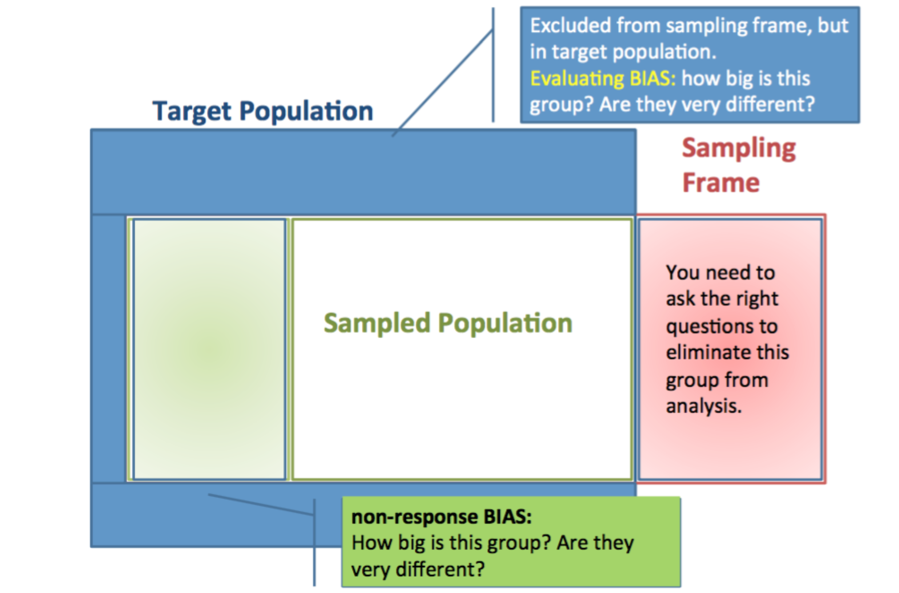
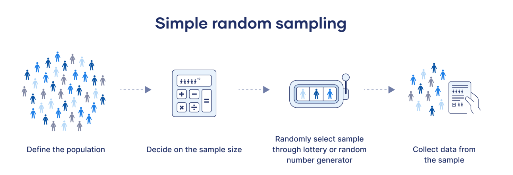
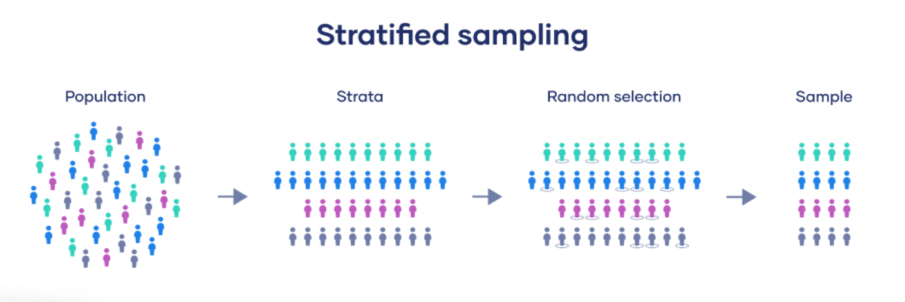

Week 7
Sociology 106: Quantitative Sociological Methods
March 3, 2026
Housekeeping
[[ADD IT IN LATER]]
Agenda
- Discuss research paper proposals
- Discuss annotated bibliography due March 19
- Sampling
- Sampling distributions
- Central limit theorem
- Lab time to work on hw
Research Paper Proposals
Overall, great job—super interesting topics!
I tried to give feedback in two areas:
Research design: How to construct variables of interest, what units of analysis may be most appropriate for your research question, other issues you may want to think about going forward
What has been written in the academic literature on your topic
Some people have questions that have had a lot written about them: this is a good sign that your question is important!
Research Paper Proposals
If you find that your question has been more or less answered as you do your annotated bibliography:
- You can still answer something that has been answered before if you use a different data source
- Or, try to think about related questions that haven’t been answered (often discussed in the conclusion section of papers)
Happy to talk further about these topics in office hours!
Annotated Bibliography
Due March 19
Identify ten scholarly sources
For each source: Discuss in 1-2 paragraphs how the source relates to your research question
- Articles in academic journals
- Academic books
- Book chapters from edited volumes
- Non-political reports from research centers / government agencies
- Blogs, internet / newspaper articles
- Wikipedia pages
- Political reports from research centers / govt
What to Include for Each Source
Your 1-2 paragraph discussion should include, but is not limited to:
- The overall argument
- The types of evidence used to support the argument
- Any possible weaknesses or strengths in the paper
This helps you engage critically with the literature!
How to Find Academic Articles
Search on Google Scholar or JSTOR
You’ll usually get somewhere by taking your independent and dependent variables and searching for:
“effect of independent variable on dependent variable”
You may need to use a UC Berkeley Library proxy to access some academic articles
This is a helpful webpage for using the proxy server and here is a link to make a virtual appointment for research help
NOTE: AI will hallucinate citations, so don’t use
How to Read Academic Articles
Read the abstract first:
- General overview of the paper
- Sets up research question, tells us data used to answer it, and result
If the paper seems relevant, then read/skim the introduction and conclusion:
- Introduction: Slightly more detailed than the abstract, but similar format
- Conclusion: Talks more deeply about result and how it relates to the research question. Discusses alternative explanations and the limitations of the study
The conclusion is a good place to find future research topics—what is important to know but hasn’t been done yet!
How to Read Academic Articles (continued)
Next, you may want to skim the background section:
- Right after the introduction, before the data section
- Discusses the previous research that motivates the research question
- This makes the background a good place to find other sources you may want to include in your annotated bibliography
The data section can be useful to skim:
- Will help you understand how the researcher constructs their sample
- More generally what data sources researchers use to answer these types of questions
Methods: Don’t worry about this too much (yet!)
- The name for this section can vary (e.g., “Analytic Strategy”, “Analysis”)
Questions?
Last Two Weeks: Recap
What we learned:
We learned the rules of probability to determine the chances of observing patterns of disjoint, independent outcomes
We used these patterns to discuss probability distributions for random variables
Now: We move from theory to practice—how do we apply these concepts to real data?
Today
Sampling: The collection of (approximately) random sets of observations from a larger population
Sampling distributions: Probability distributions of sample statistics
- Examples: sample proportions, sample means
The Central Limit Theorem: For sufficiently large samples, we can know a lot about the sampling distribution, even if we don’t know anything about the population distribution
Sampling: Basic Concepts
Population: The whole universe to which a study aspires to generalize
Parameter: A number describing some attribute of the population
- We saw how parameters can describe probability distributions of populations
Sample: The part of the population we actually have data on
- How well the sample represents the population depends on the sample design
Statistic: A number describing some attribute of the sample
Sampling from a Population

The relationship between target population and a sample
Sampling from a Population

The relationship between target population and a sample
Sampling from a Population
The relationship between target population and a sample
Sample Design
To do inferential statistics, we need a representative sample—that is, we would like for each unit of the population to have an equal chance of being included in the sample
We also want samples that are large enough for precision, which increases with sample size
Important note: Precision is also inversely proportional to the diversity of the values, which implies that larger samples are necessary to draw inferences about small groups (race, educational, sexual orientation, etc.)
Examples of Sampling Designs
Now there are number of different types of sampling techniques. Let’s look at a few:
Simple random sample: If you have a list of the population, you can use a random number generator to randomly select a sample from the population

Stratified random sample: Organize the population into homogenous groups (strata), then use simple random sampling in each strata
- Generally improves precision
- Can over-sample within smaller strata (e.g., minority groups) to obtain large enough sample size for inferences within those strata

Cluster sampling: A two-stage process:
- Create subpopulations (clusters) then:
- Randomly select a sample of clusters
- Then, randomly select units within the sampled clusters

Stratified vs Cluster
Stratified and cluster sampling sound very similar. The key difference is that in cluster sampling, not all strata are sampled but in stratified all strata are sampled.
Key for cluster sampling: To ensure that each unit has an equal chance of being sampled, larger clusters are more likely to be chosen
Creating a Representative Sample
The problem: It is actually usually infeasible to create a true random sample—most of the time, we don’t have a list of everyone in the population
But: Often we know enough about the data collection process to be able to estimate the probability that an individual will be selected into the sample, based on:
- Demographic information (age, sex, race…)
- Geographic location
- Other characteristics
Sample Weights
The solution: We can use these probabilities to construct sampling weights that are inversely proportional to the likelihood that an individual will be selected in the sample
Key idea: Sampled individuals who are less likely to be sampled should be weighted more to represent similar individuals who are not sampled
Thus, we can use sampling weights to create a representative sample
Worked Example for GSS
Let’s take a look at a worked example from the GSS, which uses a clustered sampling design:
- Create subpopulations from “primary sampling units”
- Large metro areas chosen with certainty
- Other areas drawn randomly with probability proportional to number of households
- Randomly sample clusters
- Within sampled clusters, households sampled at random
- Within sampled households, one adult within each household is chosen to be interviewed, based on the date of the next birthday
Other complexities: Oversampling black respondents, re-sampling households that don’t respond the first time, etc.
GSS Weighting Strategy
Based on the sampling design, all households are sampled at random → no weighting necessary for household-level variables
But: Individuals living in large households are less likely to be sampled!
So, we need to weight individual-level variables in proportion to the number of adults in the household
Also different weights given for:
- Analyzing the black oversample
- Accounting for the re-sampling of respondents who don’t respond the first time
GSS Weight Variables

Table showing different GSS weight variables and their purposes
Using Weights in R
There are a number of weights packages that you can use to create representative samples:
[[ADD SOMETHING HERE]]
In the tidyverse, you can also use the weights() function when summarizing data to get weighted tabulations:
[[ADD SOMETHING HERE]]
[[ADD SOMETHING HERE]]
[[ADD SOMETHING HERE]]
Questions?
Sampling Distributions
A sampling distribution is the probability distribution of a sample statistic calculated for independent samples from the same population
Key insights:
Sampling distributions describe the variability that occurs from study to study using statistics to estimate population parameters
Sampling distributions help to predict how close a statistic falls to the parameter it estimates
Sampling Distribution of a Proportion
Last week we learned about the binomial probability distribution, which is a distribution of the number of successes in n independent trials, each with probability \(\pi\) of success
We learned the mean (\(\mu\)) and the standard deviation (\(\sigma\)) of \(X \sim B(n, \pi)\) was:
\[\mu = \pi \times n\] \[\sigma = \sqrt{\pi \times n \times (1-\pi)}\]
From Binomial to Sample Proportion
The mean (\(\mu\)) and the standard deviation (\(\sigma\)) of the sampling distribution of a proportion \(\pi\) with a sample size of \(n\) is equal to the mean and standard deviation of the binomial probability distribution, divided by n:
\[\mu = \frac{\pi \times n}{n} = \pi\]
\[\sigma = \frac{\sqrt{\pi \times n \times (1-\pi)}}{n} = \sqrt{\frac{\pi \times (1-\pi)}{n}}\]
Important terminology: To distinguish the SD of a sample statistic from the SD of a sample or population, we refer to it as the standard error
Racial Profiling Example
Data:
- 262 police car stops in Philadelphia in 1997
- 207 of the drivers stopped were African-American
- Philadelphia’s population in 1997 was 42.2% African-American
Question: Is the number of African-Americans stopped higher than we would expect if cars were stopped at random?
Racial Profiling Example Analysis
Assume we can model \(X \sim B(262, 0.422)\). Let’s calculate the mean and standard deviation of the expected sampling distribution:
\[\mu = 0.422\]
\[\sigma = \sqrt{\frac{0.422 \times 0.578}{262}} = 0.03\]
But: The observed proportion of African-Americans (from last slide) that were stopped is \(207/262 = 0.79\)!
This is extremely far from what we’d expect under random sampling!
Understanding the Three Distributions
In the racial profiling example:
The population distribution consists of the 1.45 million residents of Philadelphia in 1997
The sample (or data) consists of the 262 drivers stopped by the police in Philadelphia in 1997
The sampling distribution consists of the possible values of the proportion of individuals who are African-American in a simple random sample of 262 Philadelphia residents
Visualizing Population Distribution


Key takeaway: As \(N\) becomes larger and larger, the binomial distribution approximates the normal distribution.
Sampling Distribution of the Mean
Key assumption about our sampling practices that makes this all work:
The most common sampling distribution that is used in practice is that of the mean
For a random sample of size n from a population having mean \(\mu\) and standard deviation \(\sigma\), the sampling distribution of the sample mean \(\bar{x}\) follows a normal distribution with the following parameters:
- The mean of \(\bar{x}\) is equal to the population mean \(\mu\)
- The standard error of \(\bar{x}\) equals the population standard deviation, divided by the square root of the sample size: \(\frac{\sigma}{\sqrt{n}}\)
Standard Error and Sample Size
As the sample size n becomes larger, the standard error of the sample mean becomes smaller
This is why the precision of our estimates increase with larger sample sizes!
Example: Sampling distribution of \(\bar{x}\), where \(X \sim N(0,1)\)

Shows how sampling distributions become tighter with larger \(N\)
Worked Example: Pizza Sales
Suppose the daily sales at a pizza restaurant have mean \(\mu = \$900\) and standard deviation \(\sigma = \$300\)
Question: What are the mean and standard error of a random sample of seven days?
Solution:
\(\bar{x} = \$900\)
\(SE(\bar{x}) = \frac{\$300}{\sqrt{7}} = \$113\)
Questions?
Sampling Distribution of the Mean
We didn’t talk about how, say, the daily pizza sales were distributed when calculating the sampling distribution of the sample mean
This begs the question: Does the probability distribution of a random variable (or of a variable in a population) affect the sampling distribution of the sample mean?
Answer: As long as the sample size is sufficiently large, no!
Central Limit Theorem
This is one of the most powerful theorems in statistics!
If repeated independent samples of size \(N\) are drawn from any population (no matter the distribution) having a mean of \(\mu\) and standard deviation of \(\sigma\), then—as \(N\) becomes “large”—the sampling distribution of sample means approaches a normal distribution with mean \(\mu\) and standard error \(\frac{\sigma}{\sqrt{N}}\)
Central Limit Theorem: Demo
Let’s check out this interactive visualization of the Central Limit Theorem (CLT): https://seeing-theory.brown.edu/probability-distributions/index.html#section3
This interactive tool shows how the sampling distribution approaches normality as sample size increases, regardless of the population distribution (sample shape)
Try playing with \(\alpha\) and \(\beta\) to see how that affects the sampling distribution.
How Large a Sample?
The sampling distribution of the sample mean takes more of a normal shape as the random sample size \(n\) increases
Guidelines:
The more skewed the population distribution, the larger \(n\) must be before the shape of the sampling distribution is close to normal
If the population distribution is normal, the sampling distribution will be normal for all sample sizes
In practice: If \(n > 30\), the sampling distribution will be close enough to normal for any distribution
Example: Rolling Dice
What is the probability that the mean of a random sample of 35 dice rolls (\(\mu = 3.5\), \(\sigma = \sqrt{35/12}\)) will be less than 3?
Calculate the mean and standard error for the sampling distribution:
By the Central Limit Theorem, \(\bar{x}\) is normally distributed with:
- Mean = \(3.5\)
- Standard error = \(\frac{\sqrt{35/12}}{\sqrt{35}} = \frac{1}{\sqrt{12}} = 0.2887\)
Extension: Difference Between Means
Suppose, within subpopulation\(_1\), a variable \(X\) has mean \(\mu_1\) and standard deviation \(\sigma_1\), and within subpopulation\(_1\), \(X\) has mean \(\mu_2\) and standard deviation \(\sigma_2\)
We can calculate the mean and standard error of the sampling distribution of the difference between means:
\[\mu_{\bar{x}_1 - \bar{x}_2} = \mu_1 - \mu_2\]
\[SE(\bar{x}_1 - \bar{x}_2) = \sqrt{\frac{\sigma_1^2}{n_1} + \frac{\sigma_2^2}{n_2}}\]
Not surprisingly, the sampling distribution of the difference between means is also normal!
Worked Example: Gender Wage Gap
Research question: What is the average wage difference between men and women?
Population parameters
(unknown, but assume):
- Men: \(\mu_1 = 55,000\), \(\sigma_1 = 15,000\)
- Women: \(\mu_2 = 48,000\), \(\sigma_2 = 12,000\)
Our samples:
- \(n_1 = 100\) men
- \(n_2 = 100\) women
Worked Example: Calculations
Step 1: Expected difference in sample means
\[\mu_{\bar{x}_1 - \bar{x}_2} = 55,000 - 48,000 = 7,000\]
Step 2: Standard error of the difference
\[SE(\bar{x}_1 - \bar{x}_2) = \sqrt{\frac{15,000^2}{100} + \frac{12,000^2}{100}}\]
\[= \sqrt{\frac{225,000,000}{100} + \frac{144,000,000}{100}}\]
\[= \sqrt{2,250,000 + 1,440,000} = \sqrt{3,690,000} \approx 1,921\]
Worked Example: Interpretation
What this tells us:
- The expected difference between our sample means is $7,000
- But due to sampling variability, our observed difference will vary with \(SE \approx \$1,921\)
If we repeated this sampling many times:
- About 68% of the time, our observed difference would be between:
- \(7,000 \pm 1,921\) = [$5,079, $8,921]
- About 95% of the time, it would be between:
- \(7,000 \pm 2(1,921)\) = [$3,158, $10,842]
This is the sampling distribution of the difference between means!
Summing Up
This week, we learned how to construct distributions of sampling statistics, given known population parameters and sample size
But: Most of the time we don’t actually know the population parameters
The real power of the Central Limit Theorem: It allows us to make inferences about unknown population parameters, based on the distribution of the sampling statistic
We’ll talk more about this next week!
Homework
Format: Similar to last week: solving word problems, using R when necessary
Looking ahead: Next week, we’ll probably get back to answering questions using data of your choice (hopefully, data you will use in your final paper!)
Annotated bibliography reminder: It would also be a good idea to start working on your annotated bibliography this week!
- Due March 19
- Finding relevant papers will take some time
- Don’t expect that the first 10 papers you come across will be relevant to your project
- Start early!